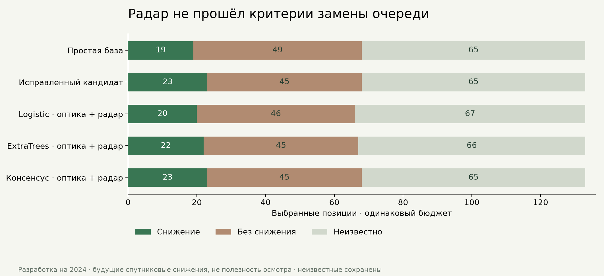

ONLYFARMS / РАЗРАБОТКА МОДЕЛИ / 9 НОЯБРЯ 2026
102 реальных съёмки 2024 года. Допуск новой модели не пройден. Прежние модели и будущий эксперимент сохранены.
Архив RTC содержит 102 сцены четырёх орбитальных серий, исходный каталог GRD — 120 записей. 18 исходных записей отсутствуют в RTC. Скачать удалось все 102 вырезки VV/VH. Для 26 из 27 приблизительных обводок есть пригодное ядро; R18 не проходит геометрический минимум. Ряды по всем площадям · CSV.
Радарная пара доступна для всех 699 исходных кандидатов модели. Возраст последнего радарного входа: 0.36–7.85 суток. Сравниваются только одна платформа, относительная орбита и направление, на одинаковых пригодных пикселях. Это данные обратного рассеяния, не NDMI и не измеренная влажность почвы. 331 неизвестный оптический исход сохранён.
По 133 выбора на 46 датах. Настройки фиксированы до опыта; временные блоки июнь–октябрь 2024, обучение только на завершённых предыдущих исходах. 2025–2026 для обучения и настройки не использовались. Этот многократно исследованный 2024 остаётся разработческим, не независимым тестом.
| Метод | Снижение | Без снижения | Неизвестно | Потеряно находок исправленного кандидата |
|---|---|---|---|---|
| Простая база | 19 | 49 | 65 | 4 |
| Исправленный кандидат | 23 | 45 | 65 | 0 |
| Logistic · оптика | 22 | 49 | 62 | 8 |
| ExtraTrees · оптика | 24 | 44 | 65 | 8 |
| Logistic · оптика + радар | 20 | 46 | 67 | 8 |
| ExtraTrees · оптика + радар | 22 | 45 | 66 | 9 |
| Консенсус · оптика + радар | 23 | 45 | 65 | 2 |
Радарный консенсус повторил общие числа 23 / 45 / 65, но потерял две известные находки кандидата (R22 · 1 июня и R11 · 10 августа), заменив их другими положительными случаями. С учётом неизвестных возможный рост отрицательных выборов относительно кандидата — до 6. Критерии сохранения находок и отсутствия роста ложных выборов не выполнены.
Выбор только по предшествующим месяцам во всех пяти блоках оставил прежнего кандидата. Оптические контрольные модели воспроизвели сохранённые оценки, поэтому отличие опыта связано с добавлением радарных признаков и их переобучением, а не тихой сменой старых параметров. Причина изменения поверхности и полезность осмотра не размечены.

После фиксации результатов отдельно проверены 12 месячных отчётов SAR-MPC ESA. У 13 из 102 наших исходных съёмок есть совпадения с перечнями продуктов/перекрывающихся съёмок с остаточными RFI. Они участвовали в 273 из 699 входных радарных пар.
Это риск исходного продукта, а не доказательство помех на пикселях хозяйства. Перечни неполные, а помехи могут занимать только часть сцены. Отсутствие в перечне также не означает подтверждённую чистоту. Эта проверка не меняла маски, метки, очереди или модели и не доказывает причину проигрыша радара.
Совпадения, страницы и исходные имена продуктов.
Ежедневный будущий эксперимент сохранил прежние модели и протокол. Планировщик успешно выполнил цикл 9 ноября в 18:00 МСК. Первый выпуск ещё ожидает целевые даты 14–16 ноября; окончательная проверка — не раньше 20 ноября. Ожидающие исходы не входят в метрики.
Полный результат · Протокол опыта · Даты и источники каждого входа · Аудит данных